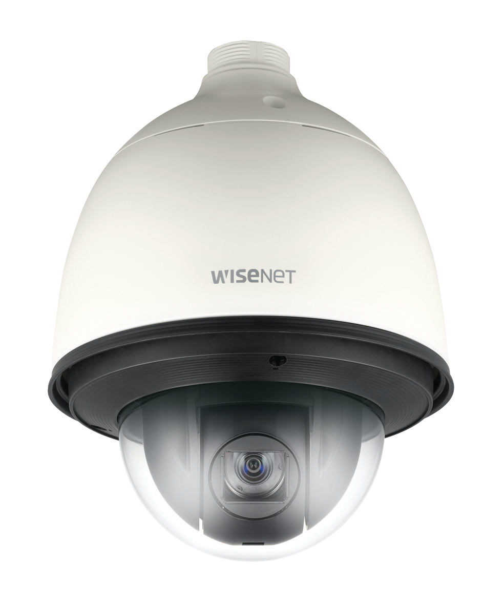
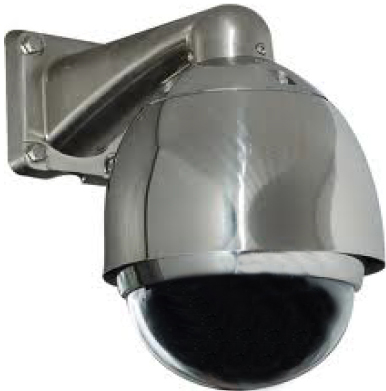

Camara HCD-6070RP
Descripción
Cámara minidomo para interiores de 2MP, WiseNet HD +, CMOS, PS, FullHD sobre coaxial (1920 × 1080, 30 fps), BNC (seleccionable AHD / TVI / CVI), WDR 120dB, lente varifocal 3.2-10 mm (manual), rango IR de 20 m, ICR, antiniebla, dist.max 500m, detección de movimiento, coaxial Ctrl, doble voltaje (12 Vcc / 24 Vca). SOLICITAR PRECIO

Camara HCP-6320HA
Descripción
SpeedDome para HD analógico 1080p para exteriores, con sensor progresivo CMOS de 1 / 2,8 ″ 2.38MP, zoom 32x. Pan: 360 ° continuo, inclinación: 210°. SOLICITAR PRECIO

Camara T15CD692S